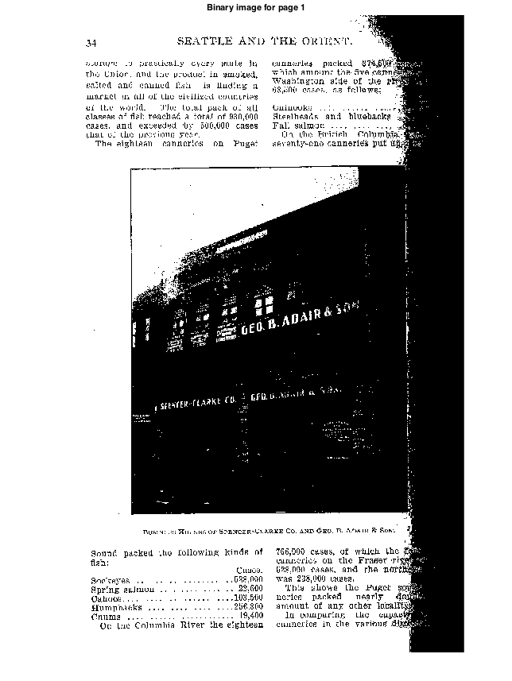
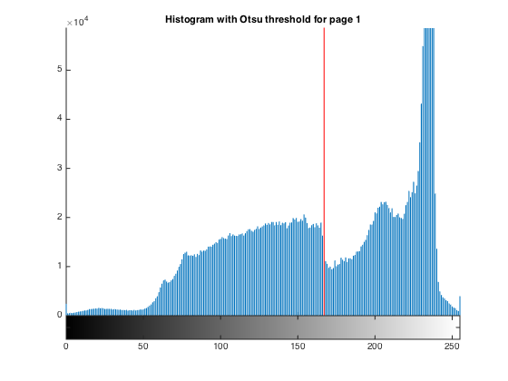
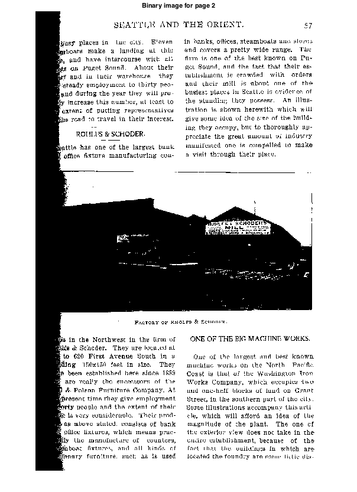
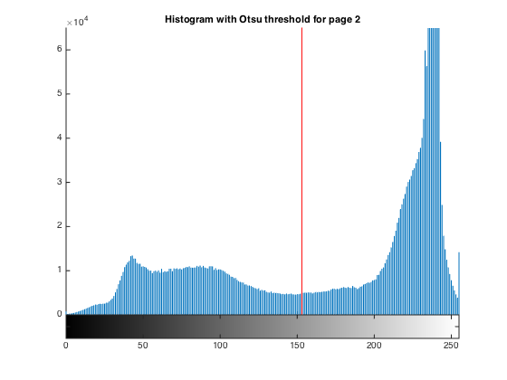
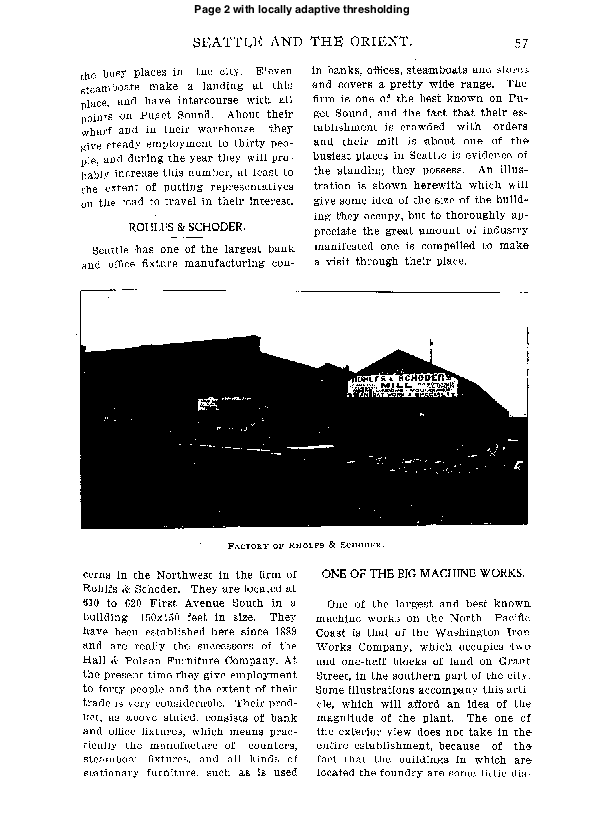

Contents
Question 3. Part A
clear all;
close all;
page1 = imread('hw2_data/hw2_book_page_1.jpg');
page2 = imread('hw2_data/hw2_book_page_2.jpg');
T1 = graythresh(page1);
T2 = graythresh(page2);
binary1 = (page1 > T1*255);
binary2 = (page2 > T2*255);
figure; imshow(binary1);
title('Binary image for page 1');
figure; hold;
imhist(page1);
plot([T1*255 T1*255], [0 1e5], 'r');
title('Histogram with Otsu threshold for page 1');
figure; imshow(binary2);
title('Binary image for page 2');
figure; hold;
imhist(page2);
plot([T2*255 T2*255], [0 1e5], 'r');
title('Histogram with Otsu threshold for page 2');
Warning: Image is too big to fit on screen; displaying at 33%
Current plot held
Warning: Image is too big to fit on screen; displaying at 33%
Current plot held
   
Question 3. Part B
[row col] = size(page1);
varThresh = 100;
stepWidth = 16;
tileWidth = 32;
mask = ones(row,col);
for i = 1: col/stepWidth
indCol = (i-1)*stepWidth + 1 : i*stepWidth;
tile = page1(:, indCol);
varTile = var(double(tile(:)));
meanTile = mean(tile(:));
otsuThresh = graythresh(tile);
if(varTile < varThresh)
if(meanTile < otsuThresh*255)
mask(:, indCol) = 0;
else
mask(:,indCol) = 1;
end
continue;
end
mask(:,indCol) = im2bw(tile, otsuThresh);
end
figure; imshow(mask);
title('Page 1 with locally adaptive thresholding');
[row col] = size(page2);
varThresh = 100;
stepWidth = 16;
tileWidth = 32;
mask = ones(row,col);
for i = 1: col/stepWidth
indCol = (i-1)*stepWidth + 1 : i*stepWidth;
tile = page2(:, indCol);
varTile = var(double(tile(:)));
meanTile = mean(tile(:));
otsuThresh = graythresh(tile);
if(varTile < varThresh)
if(meanTile < otsuThresh*255)
mask(:, indCol) = 0;
else
mask(:,indCol) = 1;
end
continue;
end
mask(:,indCol) = im2bw(tile, otsuThresh);
end
figure; imshow(mask);
title('Page 2 with locally adaptive thresholding');
Warning: Image is too big to fit on screen; displaying at 33%
Warning: Image is too big to fit on screen; displaying at 33%

